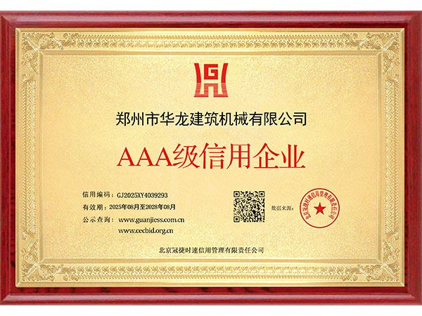
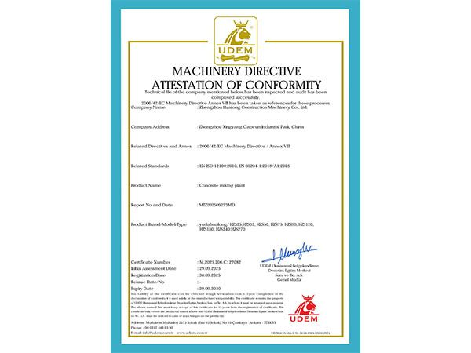
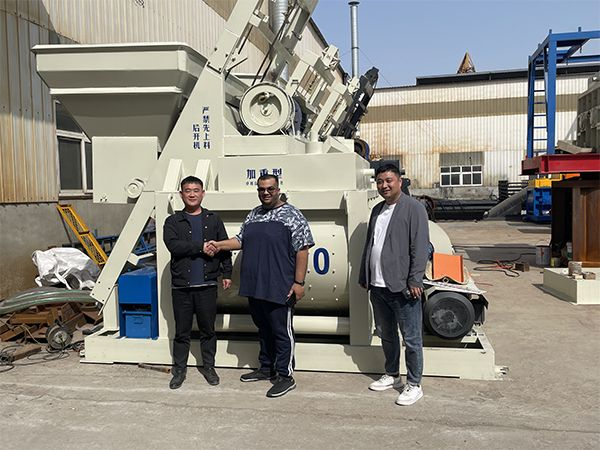
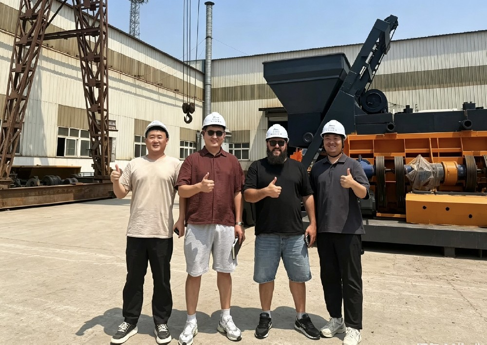

Welcome to YUDA
YUDA Concrete welcomes customers from around the world to visit our manufacturing facility, inspect equipment quality, discuss project requirements, and explore partnership opportunities. Each visit strengthens our commitment to serving global clients with reliable concrete solutions.


Factory Visit Experience
Factory Tour
Customers tour our 40,000 sqm production facility, witnessing our manufacturing process, quality control, and technical capabilities firsthand.
Equipment Inspection
On-site equipment inspection allows customers to examine machine structure, build quality, components, and operational performance before purchase.
Technical Discussion
Our engineers discuss project requirements, customized solutions, installation plans, and after-sales support with visiting clients.
Contract Signing
Many partnerships are solidified during factory visits, with contracts signed after mutual understanding and trust are established.
Our Global Clients
YUDA Concrete has hosted clients from over 7 countries across Central Asia, Africa, the Middle East, and Eastern Europe. We value every customer relationship built on trust, quality, and mutual success.


Foreign Customer Visit Gallery

Factory Tour
International customers visit our production facilities and learn about our manufacturing process.

Technical Communication
Professional discussions help us understand customer needs and provide suitable solutions.

Business Meeting
Face-to-face communication builds long-term cooperation with partners worldwide.
Successful Cooperation Cases

Successful Cooperation
Professional service and reliable products create strong partnerships with global clients.

Global Partnership
We continue developing cooperation with international customers across multiple markets.
Plan Your Factory Visit
Welcome to visit our production base in Zhengzhou. We provide airport pickup, accommodation assistance, and professional interpretation services.
Schedule Your Visit